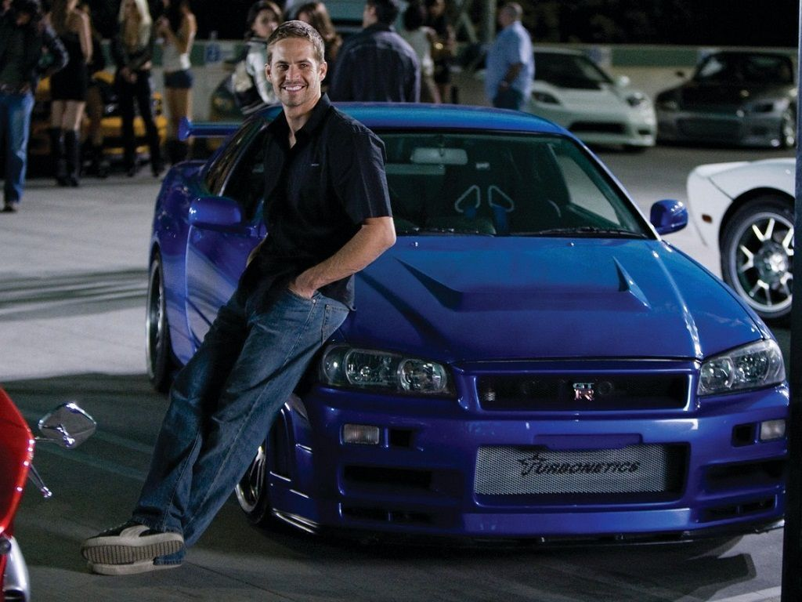

Tribute to Paul Walker

"It's not about working anymore, its about doing work I can be proud of."
12 Sep 1973
Paul William Walker IV was born in Glendale, California, USA, the son of Paul William Walker III and Cheryl Walker.
1986
Walker began his film career in 1986, appearing mainly in B films. His first role was in horror comedy Monster in the Closet.
2001
In 2001, Walker's breakthrough role was starring opposite Vin Diesel in the action film The Fast and the Furious, it was commercially sucessfull, and subsequently launched a media franchise.
2002
Paul Walker won the Best On-Screen Team Award in MTV Movie Award for starring as Brian O'Conner in The Fast and the Furious.
2003
Paul Walker drove a R34 Nissan Skyline GT-R V-Spec while starring in the sequel 2 Fast 2 Furious and later owned that car.
2009
Walker reprised his role as Brian O'Conner after seven years, in Fast & Furious. The film became the highest-grossing film in the franchise until that point. He then reprised his roles in the fifth and sixth installments of the franchise.
30 Nov 2013
Paul Walker and Roger Rodas, left an Event for Walker's charity Rich Out Worldwide for victims of Typhoon Haiyan, witrh Rodas driving his 2005 Porsche Carerra GT. In a 45 mph (72 km/h) speed zone on Hercules Street in Valencia, a neighborhood of Santa Clarita, California, the car crashed into a concrete lamp post and two trees, catching fire. Rodas died of multiple trauma while Walker died from the combined effects of trauma and burns. Both of their bodies were burned beyond recognition.
2014
Later Paul Walker with Vin Diesel won his second MTV Movie Award for Best On-Screen Duo.
Aug 11 2018
Paul's life was later chronicled in the documentary I Am Paul Walker.
January 2020
Walker also had a large collection of about 30 cars, a portion of which he co-owned with Rodas. In January 2020, twenty-one vechiles owned by Walker were sold for combined $2.33 million during spirited bidding at an annual car auction in Arizona.

Born
Paul William Walker IV
September 12, 1973
Glendale, California, U.S.
September 12, 1973
Glendale, California, U.S.
Died
November 30, 2013 (aged 40)
Santa Clarita, California, U.S.
Santa Clarita, California, U.S.
Cause of death
Injuries sustained from a single vechile collison
Buried
Forest Lawn Memorial Park Hollywood Hills, California, USA
Education
VIllage Christian School
Occupation
Actor
Years active
1984-2013
If one day speed kills me, do not cry because I was smiling.
---Paul Walker---
---Paul Walker---